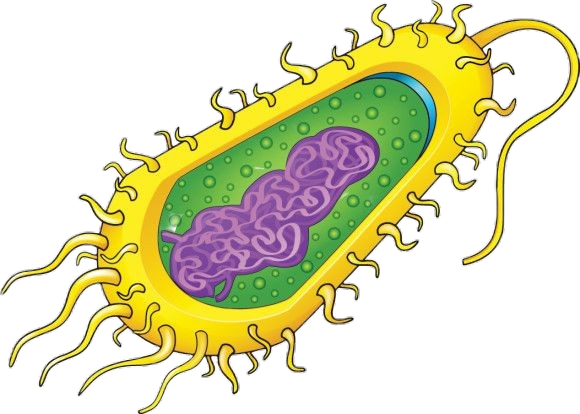

PROCARIOTAS
-

Células procariontes ou células procarióticas se destacam pela ausência de núcleo, ou seja, o material genético está disperso no citoplasma. Além disso, não possuem outras organelas, tais como mitocôndria, complexo golgiense e retículo endoplasmático.
Ribossomos são estruturas que ocorrem nesse tipo celular, estando relacionados com a síntese de proteínas. Em algumas células procariontes, pode-se observar ainda a presença de parede celular, flagelos, fímbrias e pili. Bactérias e arqueas são organismos com células desse tipo.
Os procariotos são seres unicelulares, ou seja, formados por uma única célula. Esses organismos podem ocorrer de maneira individual ou formar colônias. Em geral, são pequenos. As bactérias, por exemplo, medem, com algumas exceções, de 0,2 um a 2 um de diâmetro e de 2 um a 8 um de comprimento.
CARACTERÍSTICAS DAS PROCARIOTAS
-
Assim como todas as células, as procariontes contam com uma membrana plasmática e o citoplasma. A membrana plasmática é constituída por uma bicamada de fosfolipídios e atua, entre outras funções, selecionando as substâncias que entram e saem da célula. Também atua delimitando o citoplasma, constituído por uma matriz gelatinosa. No citoplasma estão dissolvidas diversas substâncias e é onde está o material genético.
Como mencionado, as células procariontes não têm o núcleo definido, estando seu material genético, portanto, disperso no citoplasma. A região onde está o material genético recebe a denominação de nucleoide. Nas células das bactérias, observa-se, na maioria das espécies, uma molécula circular de DNA, denominada cromossomo bacteriano, bastante condensado.
Nas bactérias, observa-se, além do DNA presente no cromossomo, pequenas moléculas circulares de DNA conhecidas como plasmídeos. Essas moléculas têm a capacidade de se replicar de maneira independente do DNA do cromossomo. Além disso, nos plasmídios há genes que podem conferir grande vantagem para as bactérias, estando relacionados, por exemplo, com a resistência a antibióticos.